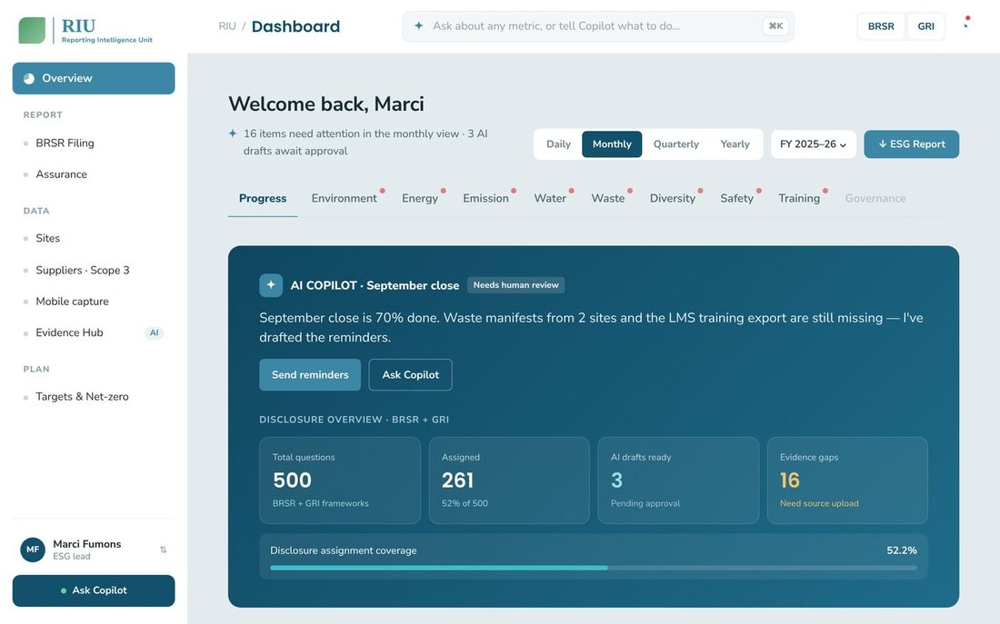
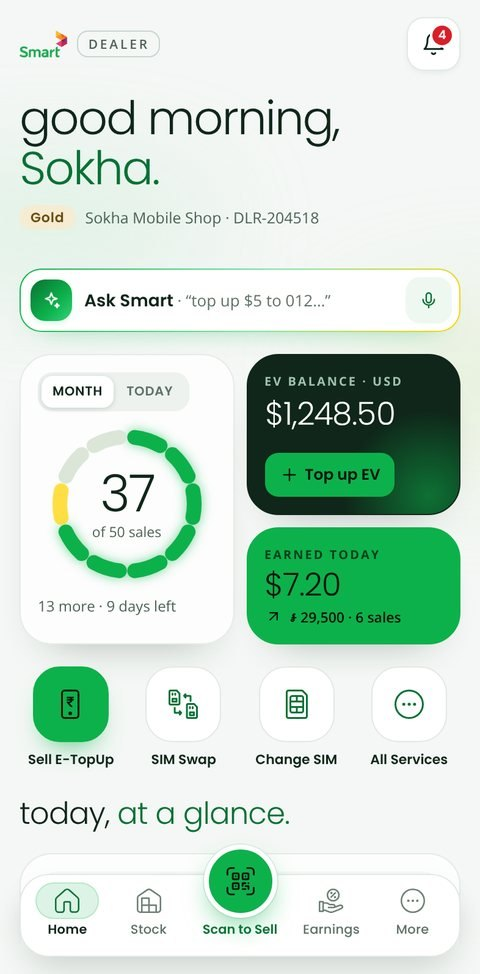

sheet 01 / AI product designer · Bengaluru
An architect who designs AI products.
Enterprise AI agents for telecom and ESG, from system architecture to shipped interface.
- +40%
- satisfaction · RIU ↑ measured, not guessed
- −30%
- task time · 6D
- ½ day
- Smart Dealer build
Selected work
real outcomes · pick one ↓
-
01

RIUAI-first ESG reporting with a Copilot that drafts, a person approves +40%satisfaction Prototype · locked → -
02

Smart DealerAI-first iPhone app for telecom retailers, Smart Axiata ½ dayresearch → prototype Prototype · locked → -
03 MagikAI marketing and customer value suite for telecom operators −30%task time Summary below
Case study
The problem
Campaign managers at telecom operators had to read raw telemetry and multi-step business logic to decide which customers to target. The old tool showed data but didn't help people act on it.
My role
Product designer on the CVM suite, working with product managers, front-end engineers, data scientists and QA, for clients including Etisalat, BICS, Smart Communications and MTN Ghana.
What I did
- Interviewed stakeholders and campaign managers, built personas, and used AI tools to synthesise secondary research.
- Created a "decision-first" framework: every screen leads with a recommended action in plain language, with the supporting data one level down.
- Designed AI-agent surfaces for predictive customer modelling and AI-assisted campaign creation, with guardrails so non-technical users can build, check and deploy multi-channel campaigns safely.
- Extended the suite into loyalty management: programme setup, customer segmentation and rewards optimisation.
- Built and maintained a tokenized design system (components, type, colour) and reviewed built screens against the designs.
Results
Task completion time dropped by 30%, and campaigns were built and deployed 30% faster.
-
04 zeeprocCustomer success platform with AI upsell agents +25%onboarding Consulting
Locked prototypes contain client work. Request access.
AI agent, designed as a system
try it! every state is designed ↘
Architecture lights up as the agent works
Patterns explored 0/7
- Streaming
- Tool transparency
- Confidence + sources
- Human approval
- User override
- Multi-turn memory
- Error recovery
Hi Marci. I can draft BRSR answers from your evidence, compare years and chase late data. Pick a task below or type one.
End-to-end practice
Business → frontend
- 3.1
Business
- Goals and KPIs
- Telecom CVM
- BRSR and GRI
- 3.2
Stakeholders
- Interviews
- Requirements
- Design reviews
- 3.3
Design
- Research
- IA and flows
- Tokenized design system
- 3.4
Frontend
- HTML, CSS, JS, React
- Developer handoff
- Design QA on built screens
Works with — Product managers · Frontend engineers · Data scientists · QA · Clients: Etisalat, MTN, Smart
From architecture to product structure first, then flow
Floor plans become information architecture
Circulation becomes user flows
Structural grids become design systems
Site analysis becomes user research
AI in my workflow
- Research
Synthesis of interviews and desk research
Claude - Explore
Wireframes and options, fast
Visily · Figma AI - Validate
Predicted attention on key screens
Attention Insight - Prototype
Working, clickable prototypes
Claude Design · Claude Code
AI drafts. I decide, test and refine.
About
Experience · education
architect → designer ✎
I studied architecture, then moved into product design in 2022. I bring the same discipline to software: structure first, then flow, then surface. Today I design AI-native products for telecom operators and ESG teams.
| 2025 → now | Product Designer (UI/UX) | 6D Technologies, Bengaluru |
| 2024 – 25 | Product Designer, Consultant | zeeproc |
| 2024 | Product Designer (UI/UX) | RIU.ai |
| 2023 | Product Designer, Consultant | FindPro.ai |
| 2022 – 23 | UX/UI Design Trainee | Supercode Design, Bengaluru |
| 2022 | Intern Architect | Hasta Architects |
| 2024 – 26 | MCA | Jain University |
| 2017 – 22 | B.Arch | BGS School of Architecture |